Free Courses to Learn to Program
There are several pages that teach you the program from scratch, there are people who without investing a lot of money learn infinities of things, but of course, doing courses like this merits having a high degree of commitment and a lot of discipline, it is not impossible but it does not take away the difficulty .
As much as we want to learn new things, our motivation goes down, either due to time or the difficulties of the path to learn, and if we do not have an engine that drives us (in this case a monetary investment) then we put aside what we want to learn and we deviate from the path. If you are one of those people who can self-motivate without making monetary investments, then you should finish reading this because then I will mention several popular pages to learn and practice programming:
1. BitDegree: Offers a ton of free courses ranging from programming to game development. There are a wide variety of programming languages included, but the most popular are listed below:
HTML, CSS, PHP, JavaScript, SQL, JQuery
2. Coursera: Offers courses, tutorials and programming resources, taught by professors from leading universities. You'll find hundreds of different programming-related courses to choose from. You will find a variety of courses available such as:
Python, Java, HTML and CSS, IoT (Internet of Things) Programming, C, Introduction to programming.

3. Code Academy: It is one of the most popular sites to learn to program for free, more than 24 million people have learned to program using this platform. Some of the languages you can learn at Code Academy include:
HTML, JavaScript, CSS, jQuery, PHP, Python.
4. edX: It is a huge open source higher education learning platform, currently has a network of more than 5 million students. There you will find tutorials that teach you languages and skills such as:
HTML and CSS, Java, jQuery, C ++, C #, Python, SQL, Mobile Application Development.

5. Khan Academy: It is a huge online learning platform. It's a great place to start gaining a wealth of programming-related knowledge and skills. You will find courses and tutorials that go from the basic principles of computer programming to advanced applications. You will be able to learn programming languages such as:
HTML, CSS, JavaScript, Databases
6. Codewars: Teaches you the desired programming language through a series of challenges. These programming challenges are based on martial arts as each challenge is known as a kata. Some of the languages you can learn at Codewars include:
Java, JavaScript, C #, Ruby, Python, SQL